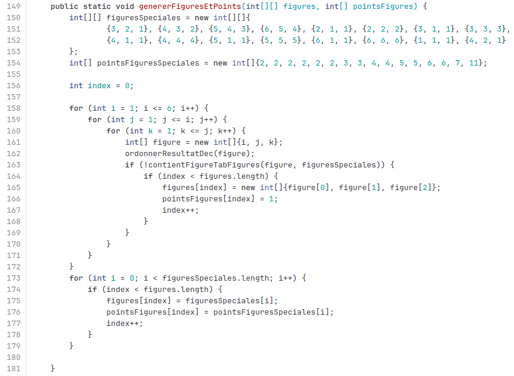

SAE 1.01 : 421
Contexte : Le 421 est un jeu de dés et de pari, qui se base sur la chance et le jugement des joueurs. Il s'agit de lancer 3 dés, en espérant former des "figures" avec ces derniers : des combinaisons de résultat qui valent plus ou moins de points. La figure "4", "2", "1" est celle qui vaut le plus de points, d'où le nom 421. Nous avons du programmer ce jeu en java, tout en développant un bot qui jouait face à un joueur en prenant des décisions intelligentes.
À propos
J'ai pu, à travers ce projet, me familiariser avec les compétences suivantes :
- Le développement efficace
- Le développement d'applications
- La programmation technique
- Le suivi de projet et code (grâce à l'outil GitLab)
Galerie & Rendu
